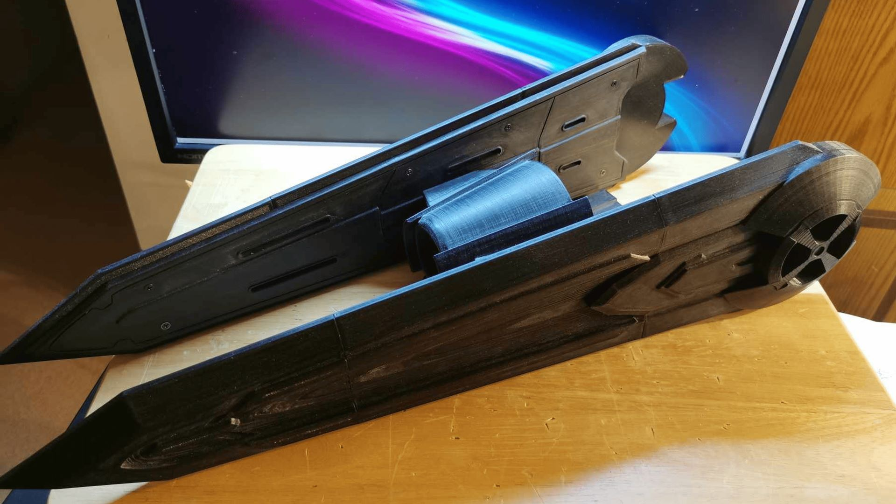
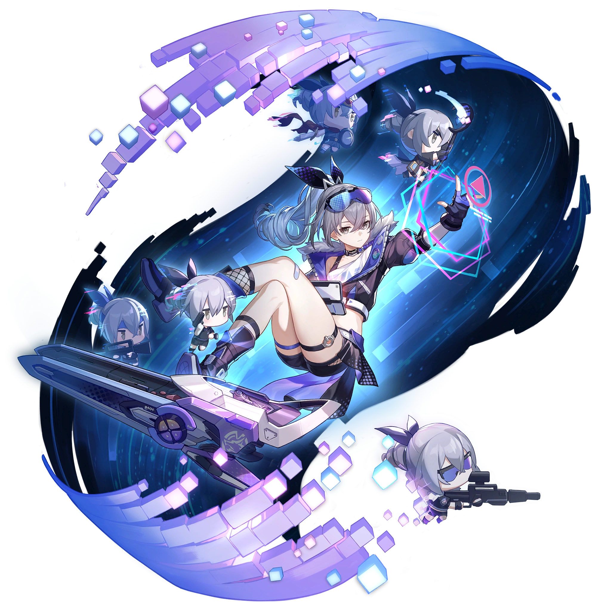
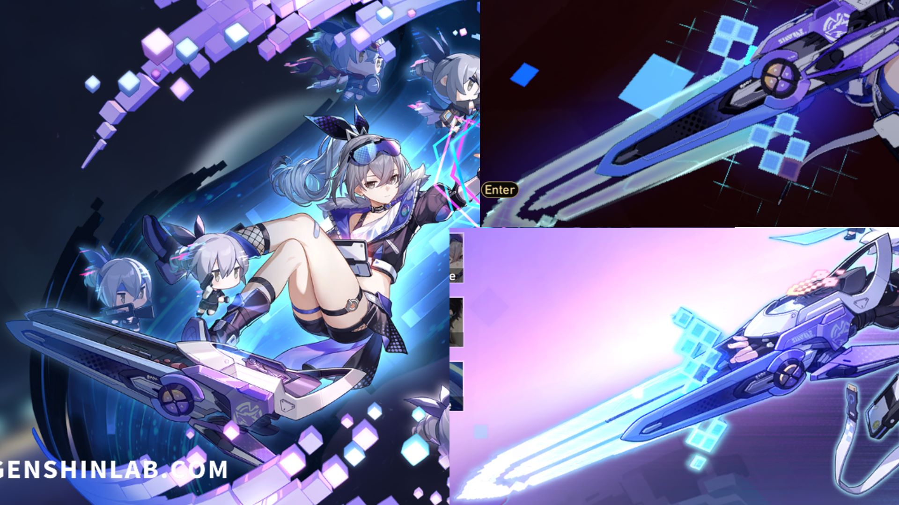
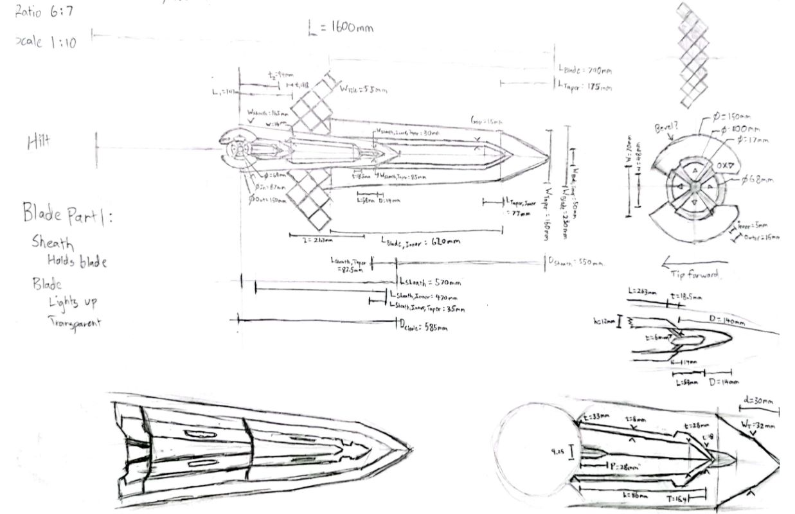
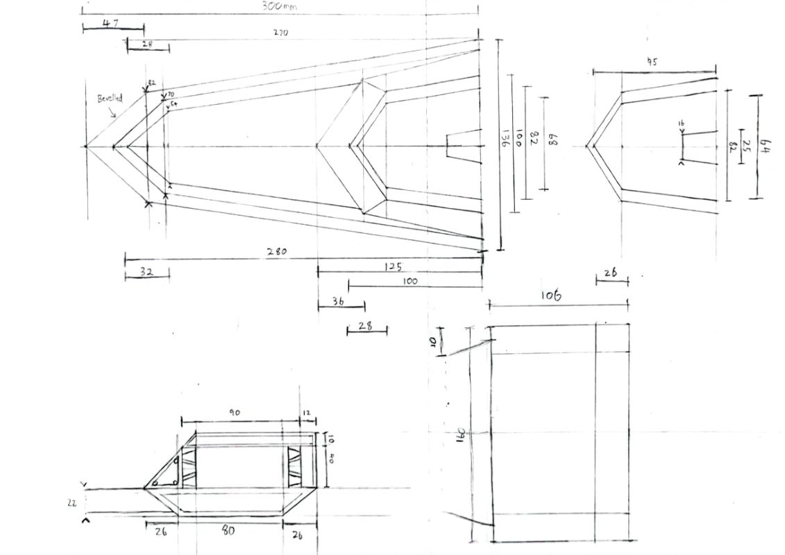
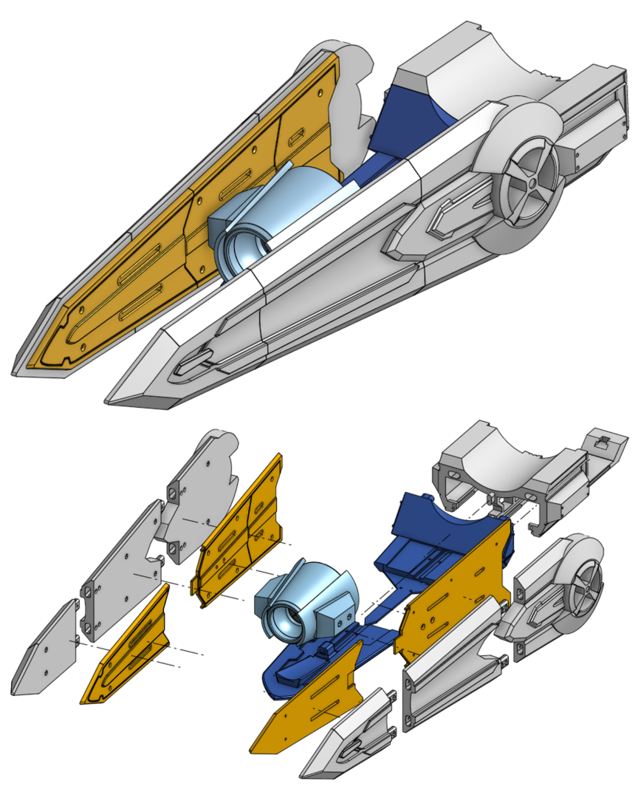
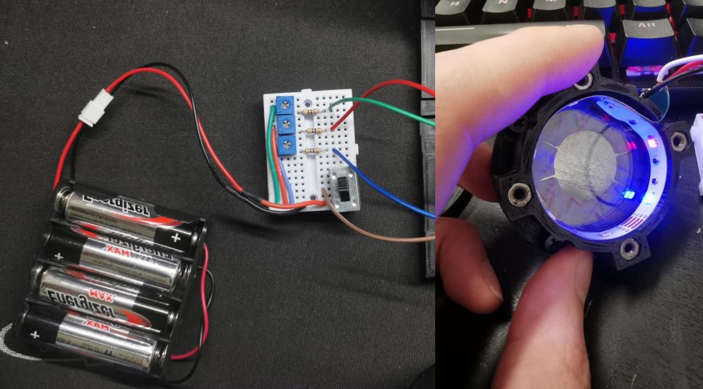

After attending Anime Revolution 2023 in Vancouver, BC, I was fascinated by the thousands of talented cosplayers with unique costumes made from a variety of materials. As a side passion project, I’ve been working on a scale model-design for an arm-mounted blaster with working electronics and moving components.
- I wanted to practice computer-aided drafting as well as good ol' pen and paper to capture the intricate details.
- I also saw this as an opportunity to familiarize myself with DFA practices, surface modeling, and electronics integration.
Drawing
The initial challenge was producing detailed concept sketches due to a lack of clear reference. As I was basing my drawings off of a video game character, the reference images I had were based on in-game models and developer artwork. Using pixel measurements and depth-of-field estimation, I measured the larger outlining features, converted the dimensions and worked from the outer edges inwards.



CADing
After initial dimensioning on paper, the parts were CADed in Onshape using a combination of solid and surface modeling to produce smoother profiles. This was the most fun due to being constrained to a 25x25cm print bed, which forced me to devise methods to maintain structural integrity and aesthetics, without adding too much weight.
Here, I learned about employing DFA principles such as split lines, locating features, and reducing parts to simplify the assembly process. Inset tabs allow for self-alignment while reducing the fasteners needed for similar strength. Additionally, split line locations maximized the space utilized on the print bed, while also being easily sanded flush. Finally, symmetrical components allow interchangeability where possible, while non-symmetrical parts were given obvious locating features.

Fabrication & Integration
Each component was printed from PLA, post processed, and test fit before being fastened together. After a subassembly was completed, it would be sanded to smooth, blending in split lines, and ensuring continutity between aesthetic trims.
In terms of electronics, I’ve begun working on integration of lighting in the blaster shroud. Currently this is just a strip of RGB LEDs wired to a small breadboard, with the ability to change the output colour using potentiometers.

As mentioned in the section above, this project is still early in development. The next step of development currently is the main housing (the underside) which will house the power supply, servo motors, and microcontroller. Additional features are outlined below:
- Moving fins for power on / power off states
- Removable polycarbonate sword that lights up through LEDs
- Rechargeable power supply using a 5000mAh power bank
- ESP32 to control components via mobile app over Bluetooth BLE
- Forearm / shoulder mounting using leather straps to reduce weight strain
- Goal final weight < 2kg